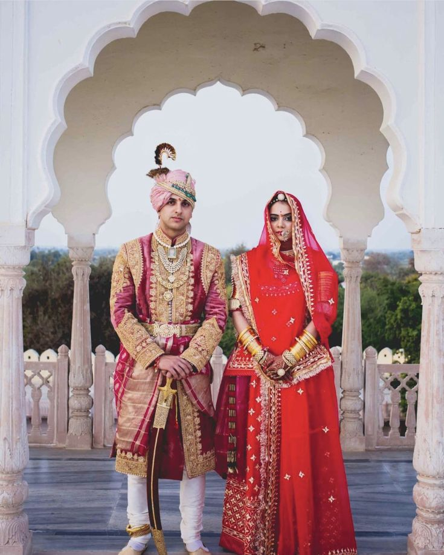
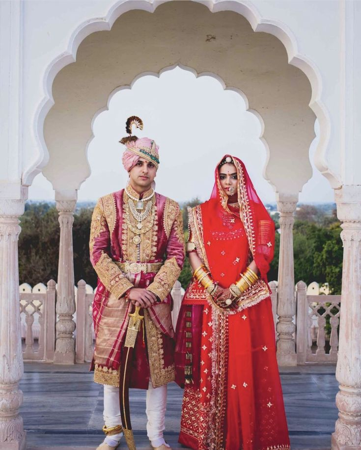

"Welcome to the Royal Splendor of Rajasthani Weddings"
Rajasthani weddings are a mesmerizing blend of opulence, tradition, and cultural grandeur.
From the vibrant Mehendi Ceremony, where intricate henna designs tell stories of love,
to the joyous Haldi Ritual, which brings laughter and blessings, every moment is steeped in meaning.
The groom’s royal Baraat, often accompanied by traditional music and a regal horse or camel,
is a spectacle of celebration. The bride, adorned in exquisite attire and heritage jewelry,
embodies grace and elegance. The sacred Pheras around the holy fire bind the couple in vows
of love and commitment. Each ritual, from the Ganesh Pooja to the heartfelt Vidaai,
is a testament to the deep-rooted traditions of Rajasthan, creating a tapestry of memories
that last a lifetime.


 
